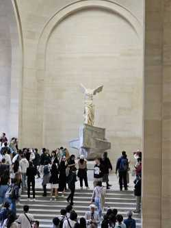

The article, Best Practices for Design, goes over some fundamental ideas and concepts about the design of a form that will be useful to me as a designer. Optimizing a website or form for the best user experience and retention is one of the main goals as a designer. The author goes over examples of this with just lowering down the amount of fields you have to enter. With stuff like surveys and forms, a sizable amount of people don’t finish them, because it takes time out of their day. Multiple steps is also a good way to build anticipation for a user. It lets the user know there is an endpoint and that they will be nearly done. Making the user experience is essential even if only a little bit. An example of this is highlighting the first field to be filled out. This saves nearly negligible time, but it still improves the user experience.
CalFresh’s application was very easy to navigate for me. Progress bar, explanations, and the one column layout was all there. I don’t think I had any problems with filling out the survey.
Journal Entry 2
January 30, 2025
The Nielsen Norman Group article, Overuse of Overlays: How to Avoid Misusing Lightboxes, emphasizes that overlays should be simple, visually distinct, and easily accessible to users. The article points out common mistakes in overlay design, broken down into five categories: Who, What, When, Where, and Why. As a designer, I understand that we have to use overlays sparingly, ensuring they serve a clear purpose without annoying or disrupting users. While the article provides many examples of poor overlay use, I think intrusive overlays can still be effective in some cases. For example, websites like Pinterest, Forbes, or Facebook want users to have an account. To accomplish this, these websites use annoying and intrusive overlays to bug users into signing in. While this is effective for the website itself, it is still a poor experience for the user.
Journal Entry 3
February 10, 2025
The article, 10 Intriguing Photographs to Teach Close Reading and Visual Thinking Skills by Michael Gonchar, goes over the best practices when it comes to visual thinking skills towards images and pictures.. Designers and artists should develop their ability to analyze and interpret images to strengthen their creative process. One key point I am taking away from this article is to always ask questions to hel[p better my understanding of a picture. This can help better engage me with the visuals and understand why and how it's made the way it is.
The website, wheregiantsroam.co.uk, uses images to showcase their photography, motion design, live action, and VFX. The images are used well: It showcases their work, creates a strong design, and is very impactful to viewers. A drawback could be that there is not enough context to the images.
Journal Entry 4
February 17, 2025
This is one of Veronica’s digital paintings. I think this image is interesting for this project in that it could easily be formatted or adjusted to fit the needs of what she wants to do. A lot can be done with a self made piece. The most obvious aspect of this image is that it is a rendition of Girl with a Pearl Earring, a pretty famous piece. To me the most mysterious aspect of this is the subtle changes in expression and lighting in this rendition. One suggestion I have to push the visual thinking of this is maybe detail the piece more so you have more options of what you are able to do.
This image is interesting to me, because I feel that it is visually engaging piece with more context behind it. The marble piece is a dramatic and symbolic piece of art taht I really love personally. It relates to my theme for my love of art as it is one of my personal favorite pieces I have seen. I could update this, by using the zoom function with scrolling that was shown in class.
Veronica’s Image

My Image
Journal Entry 5
March 2, 2025
The article, Games Design UX Best PracticesG by Amir Dori, goes over game design and how it can nudge users into doing certain actions. A lot of things talked about in this article subtly manipulates users into doing actions such as going through ads or microtransactions. For example, interaction zones are something that I’ve never really thought about, but are seen throughout app design. Placing interactive elements in these areas to improve user engagement is key to the intentional design they are going for. Additionally, another thing the article talks about is making elements and actions more intuitive for the user. Anchor points and sliders make the user experience much more smooth.